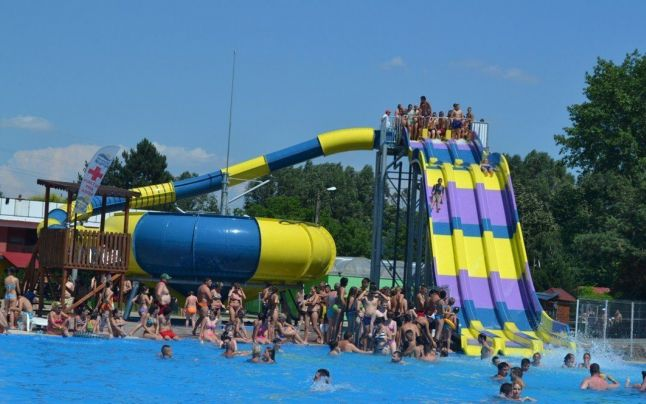
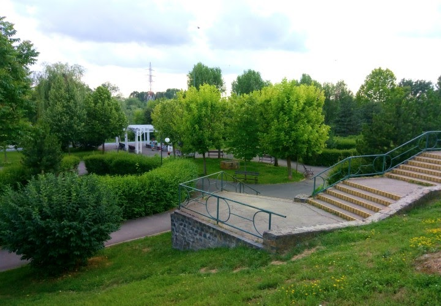

Arad, Romania
Municipiul Arad este principala poartă de intrare în România, fiind cel mai important nod rutier și feroviar din vestul țării..
Top 3 locuri de vizitat in Arad:

Strandul Neptun :
Cel mai populat loc din Arad in timpul verii.
Preturile sunt decente si distractia e pe masura.
Mai multe informatii
Aici.

Parcul Europa :
Un loc placut de a iesi la plimbare seara.
Locatia parcului o aveti
Aici
In apropiere se afla cel mai in voga Restaurant,
Bottega
Parcul Reconcilierii :
Un loc absolut necesar de vizitat in Arad.
Recomand de mers seara.
Mai multe informatii gasiti pe acest
site
Multumesc pentru atentie.
Link spre wikipedia unde puteti vedea istoricul orasului si mai multe info
Aici
by Ovidiu Alexandru.